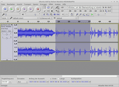
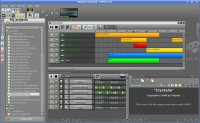

Tonstudio
Zum Verständnis dieses Artikels sind folgende Seiten hilfreich:
Diese Seite gibt einen Überblick über Software zur Klangerzeugung, -aufnahme und -bearbeitung für Ubuntu und verweist auf Tipps zur Konfiguration.
Neben Programmen, die sich in einer professionellen JACK-Umgebung verwenden lassen, werden auch solche aufgeführt, die ohne weitere Vorbereitungen funktionieren. Für viele Programme trifft beides zu. Anhand der Angaben "mit JACK" bzw. "ohne JACK" lässt sich leicht erkennen, ob JACK unterstützt oder gar zwingend für ein Programm benötigt wird.
Ubuntu als Tonstudio-System¶

Ubuntu Studio¶
Ubuntu Studio ist eine offizielle Ubuntu-Variante, die ein speziell für die Audio- und Multimediaproduktion konfiguriertes System bereitstellt und eine umfangreiche Sammlung an entsprechender Software mitliefert. Als Desktop-Umgebung dient ein angepasstes Xfce.
Alternativen¶
KXStudio ist eine inoffizielle Variante, die sich ebenfalls dem Thema Multimedia widmet. Sie zeichnet sich durch die Verwendung sehr aktueller Programme aus. Im Gegensatz zu Ubuntu Studio wird ein KDE-Desktop verwendet. Der hier weiter unten beschriebene Soundserver JACK wird grafisch über das System Cadence gesteuert, das mitunter unkomplizierter ans Laufen zu bekommen ist als das von Ubuntu Studio her bekannte QJackCtl.
Während Ubuntu Studio seinen Schwerpunkt auf die Audioproduktion legt, enthält die inoffizielle Ubuntu-Variante Dream Studio  ebenfalls einen Echtzeitkernel und mehr Programme im Bereich Videoproduktion. Basiert noch auf Ubuntu 12.04, die Weiterentwicklung wurde zwischenzeitlich eingestellt.
ebenfalls einen Echtzeitkernel und mehr Programme im Bereich Videoproduktion. Basiert noch auf Ubuntu 12.04, die Weiterentwicklung wurde zwischenzeitlich eingestellt.
AV Linux eignet sich wie Ubuntu Studio für die Audioproduktion, es basiert aber auf Debian. AVLinux wurde 2016 von Grund auf erneuert. Eine ausführliche Beschreibung ist im Artikel At Home With AV Linux des Linux Journals zu finden.
Gleichfalls besonders auf Anforderungen der Audioproduktion eingerichtet ist LibraZiK  , das gleichfalls auf dem aktuellen Debian basiert. Ähnlich KXStudio verwendet LibraZiK aktuellere Programme als Ubuntu Studio; zusätzlich ist eine größere Zahl LV2-Plugins integriert - etwa aus den Entwicklungen von Calf-Studio-Gear, die eine sehr komfortable Bedienoberfläche mitbringen. Auch hier wird JACK über Cadence gesteuert. An die Hardware stellt LibraZiK u.a. durch seine MATE-Oberfläche geringere Anforderungen als KXStudio.
, das gleichfalls auf dem aktuellen Debian basiert. Ähnlich KXStudio verwendet LibraZiK aktuellere Programme als Ubuntu Studio; zusätzlich ist eine größere Zahl LV2-Plugins integriert - etwa aus den Entwicklungen von Calf-Studio-Gear, die eine sehr komfortable Bedienoberfläche mitbringen. Auch hier wird JACK über Cadence gesteuert. An die Hardware stellt LibraZiK u.a. durch seine MATE-Oberfläche geringere Anforderungen als KXStudio.
Man kann LibraZiK betrachten als inoffiziellen Nachfolger von TangoStudio , das von den Entwicklern zwar nicht mehr betreut wird, auf der Basis des noch gepflegten Debian 7 aber lauffähig ist. TangoStudio arbeitet mit einem Echtzeitkernel und läuft auch auf älterer Hardware. Auf der Projektplattform findet sich u.a. noch ein Anwenderforum .
Konfiguration für niedrige Latenzen¶
Wird nicht Ubuntu Studio eingesetzt, so ist es für gehobene Ansprüche an niedrige Latenzen nötig, Ubuntu dahingehend zu konfigurieren. Siehe Tonstudio/Konfiguration.
Das Soundsystem JACK¶
JACK ist ein Soundserver mit niedrigen Latenzen, der Programme sowohl mit Audiogeräten als auch untereinander verbinden kann – ein Muss zur Audioproduktion. Sogar Verbindungen zu anderen Rechnern übers Netzwerk sind möglich (siehe netJACK). Als grafisches Frontend zur Konfiguration und Steuerung hat sich QJackCtl durchgesetzt.
Software¶
Recording/Editing¶
| Ardour: mit JACK / ohne JACK |
Ardour¶
Ardour ist eine Harddisk-Recordingsuite, mit der auf beliebig viele Spuren Musik aufgenommen werden kann. Mixer und Plugins (LADSPA und VST) funktionieren in Echtzeit, alle Parameter können mit Kurvenwerkzeugen und live automatisiert werden. Die Aufnahmen werden objektorientiert geschnitten und bearbeitet, wobei Aktionen unbegrenzt rückgängig gemacht und wiederherstellbare Snapshots von Sitzungen aufgenommen werden können. Ardour lässt sich über JACK oder MIDI (MTC und MMC) sowohl mit laufender MIDI-Software (Rosegarden, Muse, Qtractor) als auch mit externen Sequencern synchronisieren. Via MIDI ist es auch möglich, Ardour von professionellen Mixerkonsolen fernzusteuern und die Kanalfader solcher Konsolen von Ardour aus zu automatisieren. Siehe auch Ardour/Nutzung.
Audacity¶
|  |
| Audacity: mit JACK / ohne JACK |
Audacity ist ein freier, kostenloser, leicht zu bedienender grafischer Audio-Editor/-Recorder. Die Hauptziele der Entwicklung sind Geschwindigkeit und Plattformunabhängigkeit. Audacity kann mit einer Vielzahl von Nutzungsmöglichkeiten aufwarten, wie z.B. umfangreichen Effektmöglichkeiten, Programmerweiterungen, Stapelverarbeitung, Unterstützung zahlreicher Audioformate und vieles mehr.
Kwave¶
Kwave ist ein einfacher, speziell für die KDE-Desktopoberfläche herausgegebener grafischer Audio-Editor/-Recorder für GNU/Linux. Das Programm unterstützt Aufnahme, Wiedergabe und Bearbeitung vieler Audioformate inklusive Mehrkanal-Dateien. Der einzige Schwachpunkt von Kwave ist die bisher fehlende Unterstützung für den Audio-Codec MP3. Dieses Manko kann aber durch die Nutzung/Einbindung externer Programme ausgeglichen werden.
| mhWaveEdit: mit JACK / ohne JACK |
mhWaveEdit¶
mhWaveEdit kann zur Aufnahme, zum Schneiden und zum Bearbeiten von Audio-Daten verwendet werden. Von einfachen Effekten, wie Ein- und Ausblenden oder dem Herunter-Mischen von Stereo auf Mono bis hinzu LADSPA-Unterstützung wird eine Fülle von Funktionen bereitgestellt. Durch die deutschsprachigen Menüs und die ausführliche englische Dokumentation ist das Programm für Einsteiger wie fortgeschrittene Anwender gleichermaßen interessant. mhWaveEdit arbeitet fehlerfrei mit JACK zusammen und lässt sich in mehreren Instanzen starten.
| ocenaudio: mit JACK / ohne JACK |
Sequencer/Digital Audio Workstations¶
| Rosegarden: mit JACK / ohne JACK |
Rosegarden¶
Rosegarden - "the closest native equivalent to Cubase® for Linux" (Sound on Sound) - ist ein Audio- und MIDI-Sequenzer mit Notenschreibfunktion. Das Programm unterstützt neben LADSPA auch DSSI-Plugins, mit denen Synthesizer und Sampler umgesetzt werden können. RG bringt bereits einige Synthplugins und einfache Sampler mit, der Einsatz von VST-Plugins ist über ein Wrapper-Modul(dssi-vst)möglich. Die Audiospuren von RG bieten nicht viele Möglichkeiten, es ist daher sinnvoll, das Programm mit Ardour über JACK zu synchronisieren, wenn viel mit Audio gearbeitet werden soll.
Renoise¶
| Renoise: mit JACK / ohne JACK |
Renoise ist ein moderner und umfangreicher Nachfolger der vor allem in den 90er Jahren des letzten Jahrhunderts beliebten Tracker zum Komponieren und Produzieren von Musik. Charakteristisch für einen Tracker ist hierbei die vertikale Zeitleiste und die alphanumerische Darstellung aller Befehle (wie Lautstärke, Tonhöhe oder Effekte). Des weiteren ist das Programm komplett per Tastatur bedienbar, so dass kein Midi-Keyboard benötigt wird.
| MusE: mit JACK / ohne JACK |
MusE¶
MusE ist ein MIDI/Audio Sequencer geschrieben von Werner Schweer. Die Ziele sind die Bereitstellung eines kompletten mehrspurigen virtuellen Tonstudios unter Linux. Es unterstützt u.a. Midi sequencing, Audiospuren, LADSPA, JACK und ALSA. Support für VST-Plugins kann einkompiliert werden.
Installierbar [1] über das Paket
muse (universe)
 mit apturl
mit apturl
Paketliste zum Kopieren:
sudo apt-get install muse
sudo aptitude install muse
LMMS¶
|  |
| LMMS: mit JACK () / ohne JACK |
LMMS ist ein Sequencer, der das kommerzielle Fruity Loops zum Vorbild hat. Auch VST und LADSPA Support bringt das Programm mit. Allerdings ist es intern nicht für JACK ausgelegt und läuft deshalb nur bei hohen Latenzen mit JACK. Direkt mit Alsa funktioniert LMMS am besten.
Installierbar [1] über das Paket
lmms (universe)
mit apturl
Paketliste zum Kopieren:
sudo apt-get install lmms
sudo aptitude install lmms
| Wired: mit JACK |
Wired¶
Wired sollte ein professionelles Musik Erstellungswerkzeug für Linux vergleichbar mit Cubase auf Windows werden. Zur Zeit ist eine halbfertige, kaum benutzbare Version schwer zu installieren. Es ist nur einfach ausgestattet und nicht sehr stabil. Die Entwicklung von Wired hat in den letzten 3 Jahren keine erkennbaren Fortschritte gemacht.
| Pure Data: mit JACK / ohne JACK |
Instrumente/Synthesizer¶
| Hydrogen: mit JACK / ohne JACK |
Hydrogen¶
Hydrogen ist eine Drummachine für GNU/Linux. Das Hauptziel ist professionelle, aber dennoch einfache und intuitive musterbasierende Drumprogrammierung.
| amSynth: mit JACK |
amSynth¶
amSynth - Analogue Modeling SYNTHesizer. Ist ein kleiner feiner Synthie mit Sounds, die dem Korg 303 ähneln.
Installierbar [1] über das Paket
amsynth (universe)
mit apturl
Paketliste zum Kopieren:
sudo apt-get install amsynth
sudo aptitude install amsynth
| AMS: mit JACK / ohne JACK |
Alsa Modular Synth¶
AMS bringt eine Reihe eigener Module mit und unterstützt LADSPA-Plugins. Die Module können zu einfachen bis komplexen Synths verkabelt werden, die hochwertige Sounds erzeugen können. Alle Parameter aller Module lassen sich mit Reglern von MIDI-Controllern fernsteuern. Die LADSPA-Unterstüzung ermöglicht es auch, AMS als Effekthost zu verwenden.
Installierbar [1] über das Paket
ams (universe)
mit apturl
Paketliste zum Kopieren:
sudo apt-get install ams
sudo aptitude install ams
| Bristol: mit JACK / ohne JACK |
Bristol¶
Bristol ist ein Synthesizer-Emulations-Programm und hat eine Reihe von Vintage-Synthesizern und Orgeln zu bieten.
bristol (universe)
monobristol (universe, optional, graphische Oberfläche zum Starten)
mit apturl
Paketliste zum Kopieren:
sudo apt-get install bristol monobristol
sudo aptitude install bristol monobristol
| Beatrix: mit JACK / ohne JACK |
Effekte/Equalizer¶
| Jack Rack: mit JACK / ohne JACK |
Jack Rack¶
Jack Rack ist wie ein Rack im richtigen Tonstudio zu sehen, in dem man seine (LADSPA-) Effekt-Geräte verstaut. (mehr)
| JackEQ: mit Jack / ohne Jack |
JackEQ¶
JackEQ ist ein Drei-Band-Equalizer mit vier Stereo-Eingangskanälen, zwei Dual-Stereo AUX-Wegen, sowie Master- und Monitor-Stereo-Ausgängen. (mehr)
| JAMin: mit JACK / ohne JACK |
JAMin¶
JAMin ist ein Mastering-Prozessor, mit dem Audiostreams vom JACK-Server mit mehrbandigen Kompressoren und einem sehr leistungsfähigen Grafik-Equalizer bearbeitet werden können.
Installierbar [1] über das Paket
jamin (universe)
mit apturl
Paketliste zum Kopieren:
sudo apt-get install jamin
sudo aptitude install jamin
| Creox: mit JACK / ohne JACK |
Creox¶
Creox ist ein Echtzeit-Gitarren-Effektgerät, das die Effekte Distortion, Phaser, Flanger, Tremolo und Echo enthält. Creox wird seit einigen Jahren nicht mehr weiterentwickelt, funktioniert aber immer noch zufrieden stellend.
Installierbar [1] über das Paket
creox (universe)
mit apturl
Paketliste zum Kopieren:
sudo apt-get install creox
sudo aptitude install creox
Rakarrak¶
http://rakarrack.sourceforge.net/ Rakarrack ist ein Gitarren Multieffekt Simulator. Das Programm bietet dutzende voreingestellte Effekte für viele Zwecke an.
Installierbar [1] über das Paket
rakarrack (universe)
mit apturl
Paketliste zum Kopieren:
sudo apt-get install rakarrack
sudo aptitude install rakarrack
Plugins¶
Da es eine Vielzahl von Programmen zur Audio-Synthese oder zum Audio-Recording gibt, hat es sich als zweckmäßig erwiesen, Standard-Schnittstellen zum Einbinden von Effekten und Instrumenten zu definieren. So kann ein einmal (als sogenanntes Plugin) programmierter Effekt mit vielen Programmen genutzt werden.
LADSPA¶
LADSPA (Linux Audio Developer's Simple Plugin API) stellt eine dieser Schnittstellen dar. Die Möglichkeiten, die LADSPA-Effekte tatsächlich bieten, hängen auch vom verwendeten Host-Programm ab. Programme, die die Plugins in Echtzeit-Audiostreams einsetzen, ermöglichen es auch, die Parameter live zu verstellen, sodass der Effekt sofort hörbar wird. Das geht zum Beispiel mit Ardour, JACK Rack und AMS. Editoren wie Audacity erlauben meist nur ein Voreinstellen der Parameter und berechnen den Effekt dann offline. Die meisten LADSPA-Effekte stellen recht kleine spezialisierte Module dar - um komplexe Effekte zu erreichen, werden diese Module in Hostapplikationen wie AMS, JACK Rack oder im Mixer von Ardour miteinander kombiniert.
Über das Metapaket
ubuntustudio-audio-plugins (universe)
mit apturl
Paketliste zum Kopieren:
sudo apt-get install ubuntustudio-audio-plugins
sudo aptitude install ubuntustudio-audio-plugins
kann eine Sammlung von LADSPA- und DSSI-Plugins installiert [1] werden.
LV2¶
LV2 ist ein neuartiges Pluginsystem unter Linux, welches viele Neuerungen gegenüber LADSPA/DSSI bringt. So können in LV2 sowohl Klangerzeuger, als auch Effekt-Plugins programmiert werden. Außerdem bietet LV2 frei gestaltbare Benutzeroberflächen, so dass man nicht mehr an die spartanische Bedienung der LADSPA-Versionen gebunden ist. Bislang gibt es nur relativ wenige, dafür aber recht gute LV2-Plugins. Ardour ist eines der Programme, die LV2-Plugins beherrschen.
Weitere JACK-Clients¶
Folgend sind jene JACK-Clients aufgelistet, die im Wiki vertreten sind, jedoch nicht direkt mit der Audioproduktion zu tun haben.
Abspielen / Streaming¶
Aqualung - Audio-Player
Darkice - Streaming-Client für Internetradio mit optionaler GUI
Gmusicbrowser - Jukebox-Programm
Internet DJ Console - Umfangreicher, grafischer Streaming-Client für Shoutcast, Icecast u.ä. Streaming-Server (Funktionsumfang vergleichbar mit SAM Broadcaster)
VLC - Medienplayer
Links¶
JACK-Anwendungen
- umfangreiche Liste von Anwendungen mit JACK-Unterstützung29 Music-making Apps for Linux vom Audiotuts+
- umfangreiche Liste von Anwendungen zur Audio-ErstellungListe von Audiotrackern bei Wikipedia, inkl. solchen für Linux
ubuntu-musiker.de
 - Übersichtsseite mit vielen Informationen zu den Themen Tonstudio, Ubuntu Studio und Programmen
- Übersichtsseite mit vielen Informationen zu den Themen Tonstudio, Ubuntu Studio und ProgrammenTonstudio mit Ubuntu Studio einrichten, Blogbeiträge ab 04/2012
Opensource Audioworkstation
Tutorial über die Einrichtung eines Tonstudios mit freier SoftwareInstallation eines Tonstudios
- Artikel im Debianforum-Wiki über die Einrichtung eines Linux-Tonstudios und die Software-Auswahl
- Erstellt mit Inyoka
-
 2004 – 2017 ubuntuusers.de • Einige Rechte vorbehalten
2004 – 2017 ubuntuusers.de • Einige Rechte vorbehalten
Lizenz • Kontakt • Datenschutz • Impressum • Serverstatus -
Serverhousing gespendet von